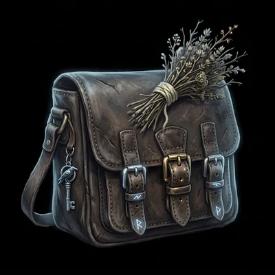
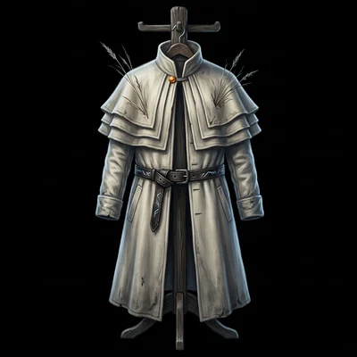
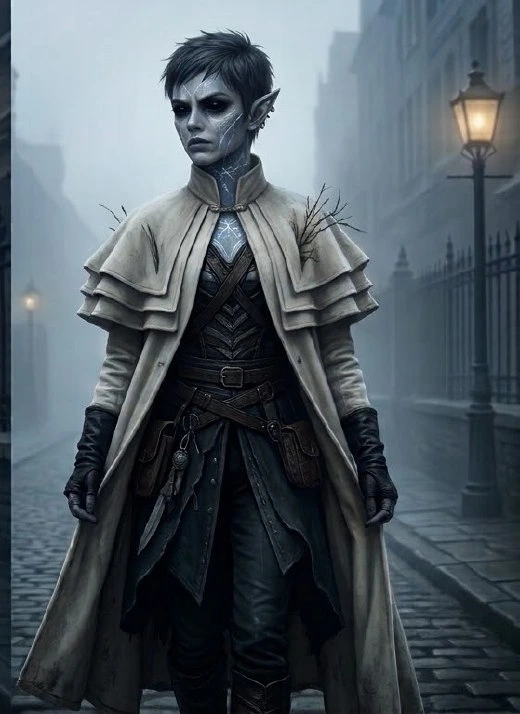

Арадия
…туман внизу, звёзды над ним
Арадия
Хиты
/
Класс доспеха
Скорость
Инициатива
Обычный
Преимущество
Помеха
Последние броски
🎲 Честность кубика ›
Общение
Харизма
· Мудрость
· мастерство
Обычный
Преимущество
Помеха
Умения
Предметы
для разговора
выбрать ›
Языки
подробнее ›
Бой
как устроен ход ›
Обычный
Преимущество
Помеха
Действие
все заклинания ›
Бонусное действие и реакция

Инвентарь
+ предмет
Всё
Разговор
Бой
Магия

Экипировка
